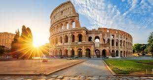

Lugares Turísticos na Europa
A Europa é conhecida por sua rica história, cultura e alguns dos destinos turísticos mais famosos do mundo. Aqui estão alguns dos lugares mais notáveis:
Paris, França
Conhecida como a "Cidade Luz", Paris é famosa pela sua moda, culinária, arte e arquitetura. A Torre Eiffel, a Catedral de Notre Dame e o Louvre são apenas alguns dos pontos turísticos.

Roma, Itália
Roma é uma cidade repleta de história. Do antigo Coliseu à Cidade do Vaticano, é um destino imperdível para qualquer turista na Europa.

Londres, Inglaterra
De ícones históricos como o Big Ben e a Torre de Londres a locais modernos como a London Eye e o Shard, Londres tem algo para todos.